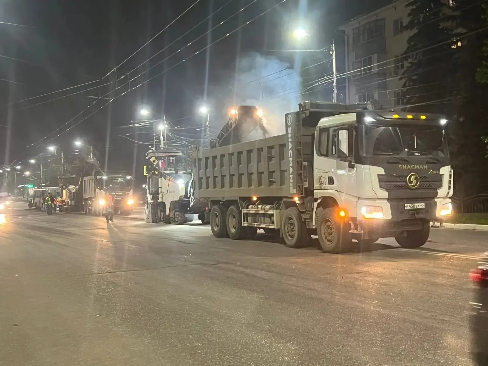

Фреза Wirtgen
Рабочая ширина фрезерования 1,3 м.

Москва и Московская область
Снимаем изношенный слой перед восстановлением покрытия. Организуем фрезу, самосвалы под крошку и доставку техники.
Подготовительный этап
Снятие старого покрытия позволяет убрать разрушенный слой, колейность и перепады, подготовить отметки примыканий и получить поверхность для укладки нового асфальта.
Рабочая ширина фрезерования 1,3 м.
Синхронно принимают снятый материал.
Следующий обязательный этап перед укладкой.
Комплексный подход
Подберём технику для очистки, подгрунтовки, укладки и уплотнения нового слоя.